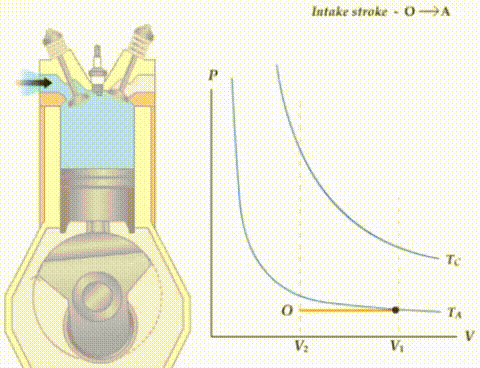

Principios y características termodinámicas de una maquina térmica
Las máquinas térmicas son dispositivos que convierten energía térmica en trabajo
mecánico mediante ciclos termodinámicos.
Segunda Ley de la Termodinámica y MáquinasTérmicas:
La Segunda Ley establece que el calor no puede fluir espontáneamente de un
cuerpo frío a uno caliente. En el contexto de las máquinas térmicas, esto significa que
no es posible construir un motor que convierta completamente el calor en trabajo.
Un diagrama típico muestra una máquina térmica que absorbe calor de un foco caliente,
realiza trabajo y rechaza calor a un foco frío.

Ecuaciones: El enunciado de Kelvin-Planck de la Segunda Ley se expresa matemáticamente como:

Ejemplos: Las centrales eléctricas, los motores de combustión interna y los refrigeradores son ejemplos de máquinas térmicas.
Los depósitos de energía son sistemas termodinámicos de gran capacidad calorífica, lo que significa que su temperatura permanece prácticamente constante al intercambiar calor con otros sistemas.
* Tipos:
* Depósito de calor: Un sistema de temperatura constante que puede suministrar o absorber una cantidad ilimitada de calor sin cambiar su temperatura.
* Depósito de trabajo: Un sistema que puede suministrar o absorber una cantidad ilimitada de trabajo sin cambiar su energía interna.
* Ejemplos: El océano, el aire y un gran lago pueden servir como depósitos de calor.
Eficiencia Térmica:
* La eficiencia térmica de una máquina térmica se define como la relación entre el trabajo neto producido y el calor absorbido del foco caliente.

La eficiencia térmica está limitada por la Segunda Ley de la Termodinámica. El ciclo de Carnot representa la máxima eficiencia teórica posible para una máquina térmica que opera entre dos temperaturas dadas.
* Ejemplos: Los motores de combustión interna tienen eficiencias térmicas que varían entre el 25% y el 40%.
Ciclos Termodinámicos:
* Un ciclo termodinámico es una secuencia de procesos termodinámicos que llevan a un sistema a su estado inicial.
* Ciclos importantes:
* Ciclo de Carnot: Un ciclo ideal que representa la máxima eficiencia posible.
* Ciclo Otto: Utilizado en motores de gasolina.
* Ciclo Diesel: Utilizado en motores diésel.
* Diagrama: Los ciclos termodinámicos se representan en diagramas P-V (presión-volumen) o T-s (temperatura-entropía)

.jpeg)

Refrigeradores y bombas de calor.
Los refrigeradores, como las bombas de calor, son dispositivos cíclicos. El fluido de trabajo utilizado en el ciclo de refrigeración se denomina refri gerante. El ciclo de refrigeración que se utiliza con mayor frecuencia es el ciclo de refrigeración por compresión por vapor, en el que intervienen cua tro componentes principales: un compresor, un condensador, una válvula de expansión y un evaporador.

Coeficiente de desempeño: La eficiencia de un refrigerador se expresa en términos del coeficiente de desempeño (COP, siglas de coefficient of performance), el cual se denota mediante COPR. El objetivo de un refrigerador es remover calor (QL) del espa cio refrigerado. Para lograr este objetivo, se requiere una entrada de trabajo de Wneto,entrada. Entonces, el COP de un refrigerador se puede expresar como.

por QL y Wneto,entrada por W. neto,entrada. El principio de conservación de la energía para un dispositivo cíclico requiere que

Entonces, la relación del COP se convierte en

Observe que el valor del COPR puede ser mayor que la unidad. Es decir, la cantidad de calor eliminada del espacio refrigerado puede ser mayor que la cantidad de entrada de trabajo. Esto contrasta con la eficiencia térmica, la cual nunca puede ser mayor que 1. De hecho, una razón para expresar la eficiencia de un refrigerador con otro término, el coeficiente de desempeño, es el deseo de evitar la rareza de tener eficiencias mayores que la unidad.
como funciona un aire acondicionado: son básicamente refrigeradores cuyo espacio refrigerado es una habitación o un edificio en lugar de un compartimiento de alimentos. Una unidad de acondicionador de aire tipo ventana enfría una habitación al absorber calor del aire de la habitación y descargarlo hacia el exterior. Esta misma unidad puede usarse como bomba de calor en invierno instalándola hacia atrás. De este modo, la unidad absorbe calor desde el exterior frío y lo entrega a la habitación. Los sistemas de aire acondicionado equipados con controles adecuados y una válvula de inversión operan como acondicionadores de aire en verano y como bombas de calor en invierno.
ejemplo

ejemplo 1

ejemplo 2 Calentamiento de una casa mediante una bomba
de calor
Se utiliza una bomba de calor para satisfacer los requerimientos de calefac
ción de una casa y mantenerla a 20 °C. Se estima que la casa pierde calor a
una tasa de 80 000 kJ/h en un día en el que la temperatura del aire exterior
desciende a 2 °C. Si la bomba de calor en estas condiciones tiene un COP
de 2.5, determine a) la potencia consumida por la bomba de calor y b) la tasa
a la que se extrae calor del aire frío exterior.


máquinas de movimiento perpetuo
Las máquinas de movimiento perpetuo son imposibles.
* ¿Qué son? Son máquinas hipotéticas que funcionarían eternamente sin necesitar energía externa.
* ¿Por qué no existen? Violan las leyes de la física, especialmente la ley de conservación de la energía.
* Tipos: Hay dos tipos principales:
* MMP1: Crean energía de la nada.
* MMP2: Convierten completamente calor en trabajo.
* Ejemplo: La propuesta de la central eléctrica de vapor es un ejemplo de MMP1.
A pesar de muchos intentos, nadie ha podido crear una máquina de movimiento perpetuo.
La idea de una máquina que funcione para siempre sin consumir energía es una fantasía que contradice las leyes de la física.

Pues bien, se tiene un invento que resolvería el problema mundial de ener- gía, si funciona, por supuesto. Un examen cuidadoso de este invento revela que el sistema delimitado por el área sombreada suministra energía hacia el exterior en forma constante una tasa de Qsalida + Wneto,salida sin recibir ninguna energía. Es decir, este sistema crea energía una tasa de salida + Wneto, salida lo que es claramente una violación de la primera ley. Por lo tanto, este maravilloso dispositivo no es otra cosa que una MMP1 y no merece más consideración
Ahora se toma en cuenta otra novedosa idea del mismo inventor. Conven- cido de que la energía no se puede crear, el inventor sugiere las siguientes modificaciones que mejorarán en gran medida la eficiencia térmica de esa central eléctrica sin violar la primera ley. Consciente de que más de la mitad del calor transferido al vapor en el horno se desecha en el condensador hacia el ambiente, el inventor sugiere deshacerse de este componente despilfarrador y enviar el vapor a la bomba tan pronto como sale de la turbina, como se muestra en la figura 6-28. De este modo, todo el calor transferido al vapor en la caldera se convertirá en trabajo y por lo tanto la planta tendrá una eficien-cia teórica de 100 por ciento. El inventor comprende que ciertas pérdidas de
calor y la fricción entre los componentes móviles son inevitables y que estos
efectos dañarán un poco la eficiencia, pero aún espera que la eficiencia no sea
menor a 80 por ciento (en oposición a 40 por ciento de la mayor parte de las
centrales de energía reales) para un sistema diseñado con cuidado.

Pues bien, la posibilidad de duplicar la eficiencia sería realmente tentadora para los administradores de la central, y si no tuvieran la capacitación
adecuada probablemente darían a esta idea una oportunidad, porque desde el
punto de vista intuitivo no ven nada malo en esto. Sin embargo, un estudiante
de termodinámica de inmediato identifica a este dispositivo como una MMP2,
ya que funciona en un ciclo y realiza una cantidad neta de trabajo mientras
intercambia calor con un solo depósito (el horno). Satisface la primera ley
pero viola la segunda y, por lo tanto, no funcionará.
Incontables máquinas de movimiento perpetuo han sido propuestas a lo largo
de la historia, y habrá muchas más. Algunos de quienes proponen incluso han
patentado sus inventos, sólo para encontrar que lo que en realidad tienen en sus
manos es un trozo de papel sin valor.
Algunos inventores de máquinas de movimiento perpetuo tuvieron éxito en
conseguir fondos. Por ejemplo, un carpintero de Filadelfia de nombre J. W.
Kelly reunió millones de dólares de inversionistas entre 1874 y 1898 para su
máquina de vacío pulsante hidroneumática, que supuestamente podía mover
3 000 millas a un tren con 1 L de agua. Por supuesto, nunca lo logró. Después de su muerte en 1898, los investigadores descubrieron que la máquina de
demostración era propulsada mediante un motor oculto. En fechas recientes, a
un grupo de inversionistas se le propuso invertir $2.5 millones en un misterioso
incrementador de energía que multiplicaba cualquier energía que utilizara, pero
el abogado de los inversionistas quería primero la opinión de un experto. Confrontado por los científicos, el “inventor” abandonó la escena sin incluso intentar poner en funcionamiento su máquina de demostración.
Cansada de las aplicaciones que proponían máquinas de movimiento perpetuo, la Oficina de Patentes de Estados Unidos decretó en 1918 que ya
no consideraría ninguna de éstas. Sin embargo, todavía se archivaron varias
aplicaciones patentadas de esta clase y muchas pasaron inadvertidas por la
oficina de patentes. Algunos aspirantes cuyas aplicaciones patentadas fueron
refutadas recurrieron a la justicia; por ejemplo, en 1982 la Oficina de Patentes estadounidense descartó como otra máquina de movimiento perpetuo a
un enorme dispositivo provisto de varios cientos de kilogramos de imanes
giratorios y kilómetros de alambre de cobre que se supone genera más electricidad que la consumida a partir de un paquete de baterías. Sin embargo, el inventor impugnó la decisión y en 1985 la Oficina Nacional de Estándares.
probó finalmente la máquina sólo para certificar que funciona con baterías. No
obstante, esto no convenció al inventor de que su máquina no funcionará.
Las personas que proponen máquinas de movimiento perpetuo por lo
común tienen mentes innovadoras, pero carecen de capacitación en ingeniería
formal, lo cual es muy desafortunado. Nadie está exento de ser defraudado por
una máquina de movimiento perpetuo, sin embargo, como reza el refrán: “Si
algo suena demasiado bueno para ser verdad, es poco probable que lo sea
Procesos reversibles e irreversibles
La segunda ley de la termodinámica establece que ninguna máquina térmica
puede tener una eficiencia de 100 por ciento. Entonces cabe preguntar, ¿cuál
es la eficiencia más alta que pudiera tener una máquina térmica? Antes de
contestarla es necesario definir primero un proceso idealizado, llamado proceso reversible.
Los procesos que se estudiaron al comienzo de este capítulo ocurrieron en
cierta dirección, y una vez ocurridos, no se pueden revertir por sí mismos de
forma espontánea y restablecer el sistema a su estado inicial. Por esta razón
se clasifican como procesos irreversibles. Una vez que se enfría una taza de
café, no se calentará al recuperar de los alrededores el calor que perdió. Si eso
fuera posible, tanto los alrededores como el sistema (café) volverían a su condición original, y esto sería un proceso reversible.
Un proceso reversible se define como un proceso que se puede invertir sin
dejar ningún rastro en los alrededores. Es decir, tanto el sistema
como los alrededores vuelven a sus estados iniciales una vez finalizado el proceso inverso. Esto es posible sólo si el intercambio de calor y trabajo netos
entre el sistema y los alrededores es cero para el proceso combinado (original
e inverso). Los procesos que no son reversibles se denominan procesos irreversibles.
Se debe señalar que es posible volver un sistema a su estado original
siguiendo un proceso, sin importar si éste es reversible o irreversible. Pero
para procesos reversibles, esta restauración se hace sin dejar ningún cambio
neto en los alrededores, mientras que para procesos irreversibles los alrededores normalmente hacen algún trabajo sobre el sistema, por lo tanto no vuelven
a su estado original.

Los procesos reversibles en realidad no ocurren en la naturaleza, sólo son
idealizaciones de procesos reales. Los reversibles se pueden aproximar mediante
dispositivos reales, pero nunca se pueden lograr; es decir, todos los procesos
que ocurren en la naturaleza son irreversibles. Entonces, quizá se pregunte por
qué preocuparse de esta clase de procesos ficticios. Hay dos razones: una es
que son fáciles de analizar, puesto que un sistema pasa por una serie de estados
de equilibrio durante un proceso reversible; y otra es que sirven como modelos
idealizados con los que es posible comparar los procesos reales.
En la vida diaria, el concepto de una “persona correcta” es también una
idealización, tal como el concepto de un proceso reversible (perfecto). Quienes
insisten en hallar a esa persona correcta para establecerse están condenados a
permanecer solos el resto de sus vidas. La posibilidad de hallar la pareja ideal
no es mayor que la de hallar un proceso perfecto (reversible). Del mismo modo,
una persona que insiste en tener amigos perfectos seguramente no tiene amigos.
Los ingenieros están interesados en procesos reversibles porque los dispositivos que producen trabajo, como motores de automóviles y turbinas de gas o vapor, entregan el máximo de trabajo, y los dispositivos que consumen trabajo como compresores, ventiladores y bombas, consumen el mínimo de trabajo cuando se usan procesos reversibles en lugar de irreversibles.

Los procesos reversibles pueden ser considerados como límites teóricos
para los irreversibles correspondientes. Algunos procesos son más irreversibles que otros. Quizá nunca se tenga un proceso reversible, pero es posible
aproximarse. A medida que se tiende hacia un proceso reversible, un dispositivo entrega más trabajo o requiere menos trabajo.
El concepto de proceso reversible conduce a la definición de eficiencia
según la segunda ley para procesos reales, que es el grado de aproximación
al proceso reversible correspondiente. Esto permite comparar el desempeño de
diferentes dispositivos diseñados para hacer la misma tarea con base en sus
eficiencias. Mientras mejor sea el diseño, menores son las irreversibilidades y
mayor es la eficiencia según la segunda ley.
Irreversibilidades
Los factores que causan que un proceso sea irreversible se llaman irreversibilidades, las cuales son la fricción, la expansión libre, el mezclado de dos fluidos, la transferencia de calor a través de una diferencia de temperatura finita,
la resistencia eléctrica, la deformación inelástica de sólidos y las reacciones
químicas. La presencia de cualquiera de estos efectos hace que un proceso
sea irreversible. Un proceso reversible no incluye ninguno de ellos. Algunas
de las irreversibilidades encontradas con mayor frecuencia se analizan brevemente a continuación.
La fricción es una forma familiar de irreversibilidad relacionada con cuerpos
en movimiento. Cuando dos cuerpos en contacto son forzados a moverse uno
respecto al otro (un émbolo en un cilindro, en la interfase de ambos se desarrolla una fuerza de fricción que
se opone al movimiento, por lo que se requiere algo de trabajo para vencer esta
fuerza de fricción. La energía suministrada como trabajo se convierte finalmente
en calor durante el proceso y se transfiere hacia los cuerpos en contacto, como
lo evidencia un aumento de temperatura en la interfase. Cuando se invierte la
dirección del movimiento, los cuerpos se restablecen a su posición original, pero
la interfase no se enfría y el calor no se convierte de nuevo en trabajo. En cambio, algo más del trabajo se convierte en calor mientras se vencen las fuerzas
de fricción que también se oponen al movimiento inverso. Dado que el sistema
(los cuerpos en movimiento) y los alrededores no pueden ser regresados a sus
estados originales, este proceso es irreversible. Mientras más grandes sean las
fuerzas de fricción, más irreversible es el proceso.
La fricción no siempre tiene relación con dos cuerpos sólidos en contacto.
También se encuentra entre un fluido y un sólido e incluso entre las capas de
un fluido que se mueve a distintas velocidades. Una fracción considerable de la potencia que produce el motor de un automóvil se emplea para vencer la fricción (la fuerza de arrastre) entre el aire y las superficies externas del automóvil, fracción que en algún momento se vuelve parte de la energía interna del
aire. No es posible invertir este proceso y recuperar la energía perdida, aunque
hacerlo no violaría el principio de conservación de la energía.

Otro ejemplo de irreversibilidad es la expansión libre de un gas, el cual se
halla separado de un vacío mediante una membrana, cuando se rompe la membrana, el gas llena todo el recipiente y la única
forma de restaurar el sistema a su estado original es comprimirlo a su volumen
inicial, transfiriendo calor del gas hasta que alcance su temperatura inicial. De
las consideraciones de conservación de la energía, se puede demostrar sin difi�cultad que la cantidad de calor transferida del gas es igual a la cantidad de tra�bajo que los alrededores realizan sobre el gas. La restauración de los alrededores
requiere convertir por completo este calor en trabajo, lo cual violaría la segunda
ley. Por lo tanto, la expansión libre de un gas es un proceso irreversible.
Una tercera forma de irreversibilidad conocida es la transferencia de calor
debida a una diferencia finita de temperatura. Considere una lata de bebida
carbonatada fría dejada en un espacio caliente. El calor se transfiere desde el aire de la habitación el cual se encuentra a mayor temperatura
hacia la lata que está más fría. La única forma de invertir este proceso y restablecer la temperatura original de la lata de soda es proporcionarle refrigeración, lo cual requiere algo de entrada de trabajo. Al final del proceso inverso,
la soda vuelve a su estado original, pero no los alrededores. La energía interna
de éstos se incrementa en una cantidad igual en magnitud al trabajo suministrado al refrigerador. Restablecer los alrededores a su estado inicial sólo
es posible si se convierte este exceso de energía interna completamente en
trabajo, lo cual es imposible sin violar la segunda ley. Como solamente el
sistema, no el sistema y los alrededores, puede ser restablecido a su condición
inicial, la transferencia de calor ocasionada por una diferencia finita de temperatura es un proceso irreversible.
La transferencia de calor puede ocurrir sólo cuando hay una diferencia de
temperatura entre un sistema y sus alrededores, por lo tanto es físicamente
imposible tener un proceso de transferencia de calor reversible. Pero un proceso de transferencia de calor se vuelve cada vez menos reversible a medida
que la diferencia de temperatura entre los dos cuerpos se aproxima a cero.
Entonces, la transferencia de calor por una diferencia de temperatura diferencial dT se puede considerar como reversible. Cuando dT se aproxima
a cero, el proceso puede cambiar de dirección (por lo menos en teoría) sin
requerir ninguna refrigeración. Observe que la transferencia de calor irreversible es un proceso conceptual y no es posible reproducirlo en el mundo real.
Mientras más pequeña sea la diferencia de temperatura entre dos cuerpos,
más pequeña será la tasa de transferencia de calor. Cualquier transferencia
de calor importante debida a una diferencia de temperatura pequeña requiere
un área superficial muy grande y un tiempo muy largo. Por lo tanto, aunque
desde un punto de vista termodinámico es deseable aproximarse a la transferencia de calor reversible, es impráctico y no factible económicamente.


Procesos interna y externamente reversibles
Un proceso representativo tiene que ver con interacciones entre un sistema y
sus alrededores, y uno reversible no conlleva irreversibilidades relacionadas
con cualquiera de ellos .Un proceso se denomina internamente reversible si no ocurren irreversibilidades dentro de las fronteras del sistema durante el proceso. Durante un
proceso internamente reversible, un sistema pasa por una serie de estados de
equilibrio, y cuando se invierte el proceso, el sistema pasa por los mismos
estados de equilibrio mientras vuelve a su estado inicial. Es decir, las trayectorias de los procesos inverso y directo coinciden para un proceso internamente reversible. El proceso de cuasiequilibrio es un ejemplo de un proceso
internamente reversible.
Un proceso es denominado externamente reversible si no ocurren irreversibilidades fuera de las fronteras del sistema durante el proceso. La transferencia
de calor entre un depósito y un sistema es un proceso externamente reversible si
la superficie exterior del sistema está a la temperatura del depósito.
Se le denomina a un proceso totalmente reversible, o nada más reversible, si no tiene que ver con irreversibilidades dentro del sistema o sus alrededores . En un proceso de este tipo no hay transferencia de calor
debida a una diferencia finita de temperatura, ni cambios de no cuasiequilibrio
y tampoco fricción u otros efectos disipadores.
Como ejemplo, considere la transferencia de calor de dos sistemas idénticos que experimentan un proceso de cambio de fase a presión constante (y
por ende, a temperatura constante). Ambos
procesos son internamente reversibles, porque se llevan a cabo de forma isotérmica y ambos pasan por exactamente los mismos estados de equilibrio. El
primer proceso mostrado es también externamente reversible, ya que la transferencia de calor para este proceso tiene lugar debido a una diferencia de temperatura infinitesimal dT. Sin embargo, el segundo proceso es externamente
irreversible, ya que hay transferencia de calor ocasionada por una diferencia
finita de temperatura ∆T.

Como funciona un motor de combustión interna (Diesel y Gasolina) de 4 tiempos y 2 tiempos
En un motor de 4 tiempos, cada ciclo de combustión se completa en cuatro carreras del pistón (dos vueltas del cigüeñal). Las fases son: admisión, compresión, combustión y escape.
Ciclo Otto (Gasolina):
Admisión: La válvula de admisión se abre, permitiendo que una mezcla de aire y combustible entre en el cilindro.
Compresión: Ambas válvulas se cierran y el pistón comprime la mezcla, aumentando su temperatura y presión.
Combustión: Una bujía enciende la mezcla, provocando una rápida expansión y generando fuerza sobre el pistón.
Escape: La válvula de escape se abre, permitiendo que los gases de combustión sean expulsados del cilindro.
Ciclo Diesel:
Admisión: Solo entra aire en el cilindro.
Compresión: El aire se comprime hasta una temperatura muy alta.
Combustión: Se inyecta combustible, que se enciende espontáneamente debido a la alta temperatura del aire comprimido.
Escape: Los gases de combustión se expulsan.
Diagramas:
p-V: Muestra la presión y el volumen en cada fase del ciclo.
T-s: Representa la temperatura y la entropía.
Ecuaciones:
Rendimiento térmico: Relación entre el trabajo neto y el calor suministrado
Potencia: Trabajo neto por unidad de tiempo
Ejemplos:
Motores de automóviles: La mayoría de los coches utilizan motores de 4 tiempos.
Motores estacionarios: Empleados en generadores, bombas, etc.
Motores de 2 Tiempos:
Teoría: En un motor de 2 tiempos, cada ciclo se completa en dos carreras del pistón. Las fases se superponen en el tiempo.
Ciclo:
Admisión y Compresión: El pistón sube, comprimiendo la mezcla y permitiendo que entre una nueva carga de mezcla a través de aberturas en la pared del cilindro.
Combustión y Escape: El pistón baja, provocando la combustión y la expulsión de los gases de combustión a través de otras aberturas.
Ventajas:
Potencia específica alta.
Diseño simple.
Desventajas:
Mayor consumo de combustible
Más contaminación.
Menor eficiencia
* Diagramas:
p-V: Similar al de 4 tiempos, pero con fases superpuestas.
Ecuaciones:
Rendimiento térmico: Similar al de 4 tiempos, pero con pérdidas adicionales.
Ejemplos:
Motocicletas pequeñas: Muchos scooters y motos pequeñas utilizan motores de 2 tiempos.
Motosierras: Por su alta potencia y peso ligero.
